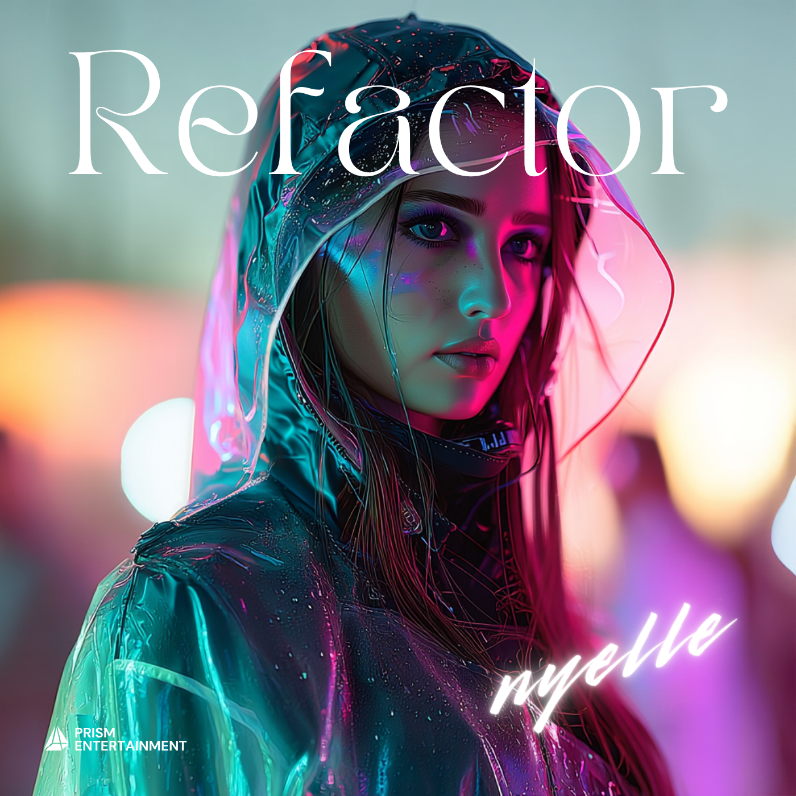
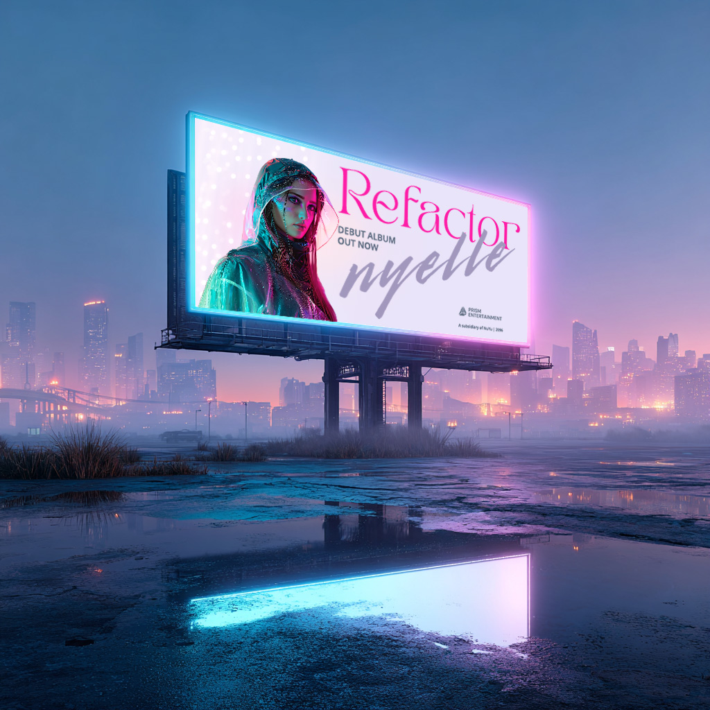

REFACTOR
In an era defined by light, rhythm, and reinvention, Nyelle stands as the voice of genuine connection. Her debut album traces the evolution of feeling in a world where emotion and technology move in quiet harmony.
Album — REFACTOR (Prism Entertainment, 2096)

Eight tracks moving from awakening to afterglow. Ambient electronica and melancholic trance with Nyelle’s signature, ethereal vocal design.
- 1. LUMEN (Intro) 1:56
- 2. Touch Simulation 3:47
- 3. Refactor 4:24
- 4. Glassheart 4:44
- 5. Ghost 4:44
- 6. When You Look in the Mirror 3:24
- 7. Say It’s Forever 3:24
- 8. DUSK (Outro) 2:57
About Nyelle
Nyelle Ward is a British vocalist and songwriter under Prism Entertainment, a NuYu subsidiary specialising in sensory‑immersive performance. Known as “the voice that feels,” her PAY SKIN is tuned to resonate with live biometric data, creating performances that feel intimate, cinematic, and impossibly human.
Raised within Prism’s education pipeline, Nyelle emerged as the flagship artist for the Neuro‑Vocal Synchronisation Project — a programme designed to amplify authentic emotion on stage. Her debut album, REFACTOR, blends reflective ambient textures with melancholic trance to explore light, memory, and the spaces between truth and illusion.
Nyelle lives in London with her husband, sound engineer Adam Ward. Offstage, she is an avid listener and archivist of historic synth works and early twenty‑first‑century club culture.
Press Note
REFACTOR traces the evolution of feeling in a world where emotion and technology move in perfect harmony. From the slow awakening of LUMEN to the sweeping brilliance of Refactor and the quiet dissolve of DUSK, Nyelle guides listeners through an intimate, reflective soundscape.
Contact
For licensing, press, or live performance queries, please contact Prism Entertainment.
Email: press@prismentertainment.com
Updates
Subscribe for official announcements, release notes, and live performance dates.